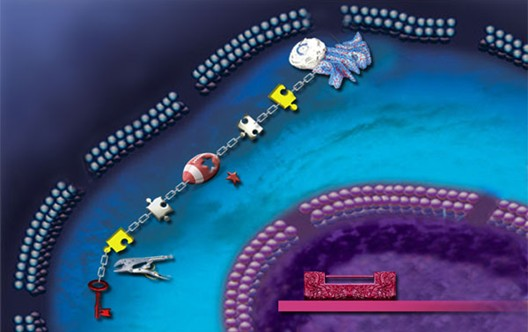
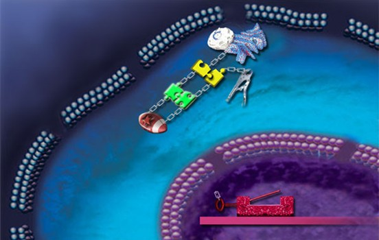

Project III: Y-hunter - (Collaborative Design) - in the competition stage
Abstract: What we want to design is a model which can detect the signals such as target drug, heavy metal ion in the protein level. The manner that detects signals in the protein level is rapid, measurable. It is another function of this model that is to dispose the signal after detecting it. The way of constructing this model is structure-based. It is made after rational design including molecular docking, molecular docking, mathematical simulation, homology modeling.
Detail and process: The system contains of two parts. One of them is in the cytoplasm and another is in the nucleolus. There are also three parts composing the device in cytoplasm. They are maltose-binding protein, split luciferase, split ubiquitin with transcription factor LexA+VP16. The part in the nucleolus is Flo1 gene expressing flocculation protein, which can be opened by LexA+VP16 (the figure below).
The system is activated by ligand maltose(the figure below). The conformation of MBP will change as soon as maltose combines with hinge region of MBP, which will lead N-terminal and C-terminal to be closed. The split luciferase and ubiquitin will come together since the conformational change of MBP. Entire luciferase will emit yellow light and entire ubiquitin will lead LexA+VP16 to leave away ubiquitin. Then the LexA+VP16 will enter nucleolus to open the Flo1 gene.
Parts:
- BBa_K500000 lignin Degradation 1 (lip) CmR
- substrate:aromatic ring material (Non-phenolic )
- mechanism:capture the electrons of the aromatic ring, forming positive ion free radicals and causing free radical reaction
- BBa_K500001 lignin Degradation 2 (Mnp) CmR
- substrate:aromatic ring material (Non-phenolic ) mechanism:capture the electrons of the aromatic ring, forming
- positive ion free radicals and causing free radical reaction
- BBa_K500002 lignin Degradation 3 (Lac) CmR
- substrate:polyphenol aminophenol, chlolophenol and so on mechanism:cause free radical reaction
- BBa_K500003 lignin Degradation 4 (Glox) CmR
- substrate:glyoxal glycolaldehyde and so on function:produce H2O2
- BBa_K500005 Luc1 1A
- N-terminal of luciferase contains 1-436aa of 550aa
- BBa_K500006 Luc2 1B
- C-terminal of luciferase contains 440-550aa of 550aa
- BBa_K500007 MBP 1C
- Maltose-binding protein. The conformation of this protein will change when maltose combine with MBP
- BBa_K500008 Nub 1D
- N-terminal of ubiquitin contains 1-35aa of 76aa.
- BBa_K500009 Cub+LexA+VP16 1E
- C-terminal of ubiquitin with a transcriptional factor.
- BBa_K500010 Luc1+Luc2 1F
- There are two endonuelease sites BamHI, KpnI existing between Luc1 and Luc2
- BBa_K500011 Luc1+MBP+Luc2 1G
- A detecting device can detect maltose.
- BBa_K500012 Nubg+MBP+Cub+LexA+VP16 1H
- A processing device, can open a gene to express
- BBa_K500013 Nub9+Luc1+MBP+Luc2+Cub+LexA+Vp16 2A
- A device can sense and deal with signals